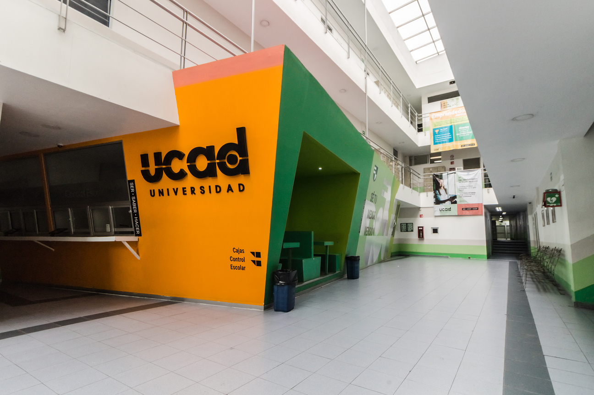

Ucad
Resumen y textos de la univercidad

Proposito
Esta web tiene como propisito el repaso y o archivo de las materias abordadas a lo largo del tiempo resumidas en pequenos fragmentos importantes o destacables sobre la materia en si. Al igual que algunos links de contenido externo tanto como imagenes y videos de clases grabadas en linea que estaran subidas en google drive.
Leer maspendiente